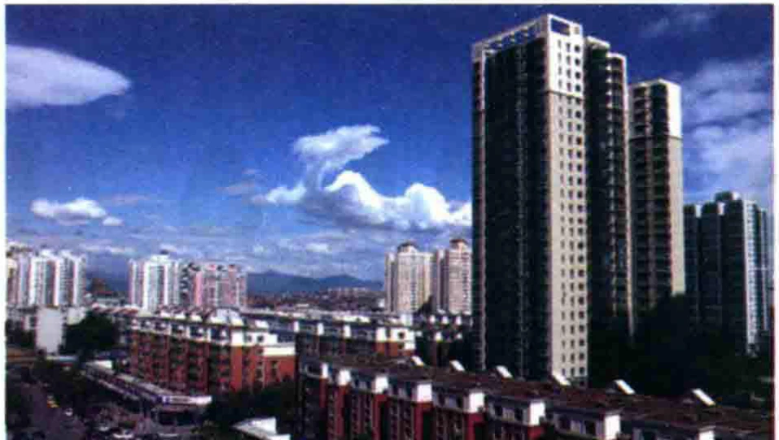

标准教程5（上）Стандартный курс 5 (том I)去年，在我和妻子的努力下，我们终于用打工挣的钱，在县里买了一套新房。新房装修完，父母第一次走进新房时，高兴得不得了。妻子提出留一串钥匙给父母，可他们拒绝了。那天，父亲喝醉了，等他醒时，天色已晚。我和妻子强烈留父母在新房住一夜，第二天再回，但他们仍坚持坐上了最后一趟回老家的车。В прошлом году мы с женой благодаря своим усилиям наконец купили в уезде новую квартиру на заработанные деньги. Когда ремонт закончился и родители впервые вошли, они были невероятно рады. Жена предложила оставить им связку ключей, но они отказались. В тот день отец выпил и проснулся уже поздно. Мы настойчиво просили родителей переночевать и вернуться завтра, но они всё же уехали последним автобусом домой.一段时间后，我和妻子又准备去外地打工，新房只能上锁空着。临那天，父亲从老家赶来送我们。父亲悄悄把我拉到一边说：“你妈说了，你还是留一串新房的钥匙给我们，要是我和你妈什么时候想来了，就来住上几天，顺便给你们晒晒被子，打扫打扫卫生。”父亲说这话时，轻声细语，还红着脸，像个害羞的孩子。Через некоторое время мы с женой опять собрались работать в другом месте, а новую квартиру пришлось запереть и оставить пустой. В день отъезда отец приехал нас проводить. Он тихонько отвёл меня в сторону: «Мама сказала, всё-таки оставь нам связку ключей. Когда захотим, приедем пожить несколько дней, заодно просушим ваши одеяла и приберёмся». Он говорил тихо и деликатно, покраснев, словно застенчивый ребёнок.转眼又是半年，我们回家时是一个深冬的夜里。下了长途车，儿子被冻得大哭。我和妻子想象着打开家门满是灰尘、冷冷清清的景象，觉得心里发寒。来到楼下，抬头一看，却发现自家亮着灯光。上了楼，开门的竟是微笑着的父母，温暖的气息立刻扑面而来：室内打扫得干干净净，暖气Прошло ещё полгода. Мы вернулись домой глубокой зимней ночью. Выйдя из междугороднего автобуса, сын расплакался от холода. Мы представляли запылённую, холодную и пустую квартиру, и на душе становилось зябко. Но у дома подняли глаза — в наших окнах горел свет. Дверь открыли улыбающиеся родители. Нас сразу окутало тепло: комнаты были безупречно убраны, отопление…

dǎ gōng11.打工v. to work for others,to do a temporary jobработать по наймуzhèng12.挣v. to earnзарабатыватьxiàn13.县n.countyуезд14.套tàom. set, suiteкомплект; счётное слово15.装修zhuāngxiūv. to decorate(a house, room, etc.)делать ремонт16.不得了bùdéliǎoadj. extremely, exceedinglyчрезвычайно17.醉zuìv. to be drunkбыть пьянымqiángliè18.强烈adj. strong and vehementсильный; настойчивый19.夜yèn. nightночьsuǒ20.锁n./v. lock; to lock upзамок; запиратьlín21.临prep. about to, just beforeперед; незадолго до22.悄悄qiāoqiāoadv.quietly, secretlyтихо; тайкомshài23.晒v. to dry in the sunсушить на солнцеbèizi24.被子n. quiltодеяло25.长途chángtúadj. long-distanceдальнего следованияdòng26.冻v. to freeze, to feel very coldмёрзнуть; замерзать27.想象xiǎngxiàngv. to imagineпредставлять28.灰尘huīchénn.dust, dirtпыльliàng29.亮adj./v. bright; to shineсветлый; светить30.微笑wēixiàov./n. to smile; smileулыбка; улыбаться31.温暖wēnnuǎnadj./v. warm; to makesb./sth.warmтёплый; согреватьlìkè32.立刻adv. at once, immediatelyнемедленноpū*33.扑v. to pounce on, to dash atбросаться; устремляться10